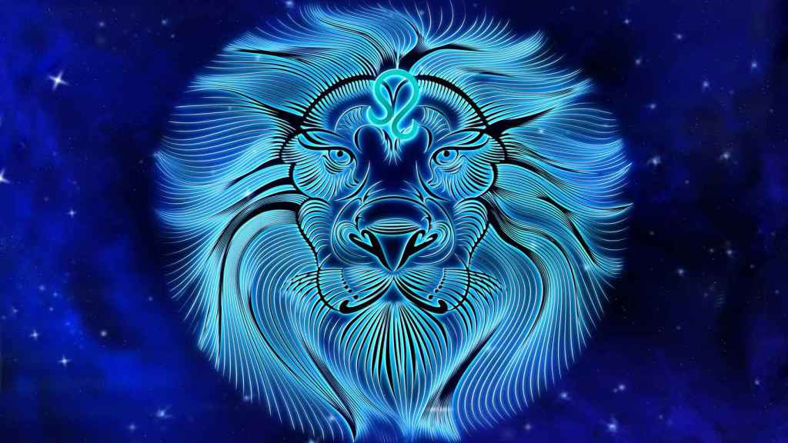

LEO
Las personas nacidas en Leo entre el 22 de julio y el 23 de agosto suelen tener, según la astrología, un carácter fiel, bondadoso, optimista, generoso y extrovertido. Son ambiciosos, valientes, independientes y seguros de sí mismos. Por otro lado, como punto negativo, los Leo son idealistas, inteligentes, tercos, un poco arrogantes, orgullosos y pueden tener mal humor.
El signo de Leo es fijo y de fuego, también el signo más dominante del zodíaco. Creativo y abierto, tiene ambición, valor, fuerza, autonomía y total seguridad en sí mismo: sabe dónde quiere llegar y nada ni nadie podrá evitarlo. En contrapartida, sus puntos negativos pueden ser tantos como las virtudes que tiene: vanidad, egocentrismo, arrogancia, impostura y un genio de mil demonios, entre otros defectos. Los Leones son entusiastas, creativos y muchas veces comprensivos con las circunstancias de los demás; adoran los lujos y la aventura; correr riesgos les motiva. También se caracterizan por tener un elevado concepto de todo, especialmente, de sí mismos, por eso huyen de la vulgaridad.
Como disfrutan con la emoción de las nuevas experiencias y adoran estar en medio de mucha gente, es muy posible que alternen varios círculos sociales y de amistad, aunque nunca olvidarán a sus verdaderas amistades. En el amor, Leo es romántico, algo caprichoso, poco fiel y prisionero de la belleza. Además, no le falta sinceridad, por lo menos mientras dura el amor, no más. Finalmente, le encantan las relaciones sexuales, así que es muy posible que tenga diversas y diferentes parejas durante su vida.
CANCER

Tradicionalmente, la astrología occidental atribuye al signo del zodiaco Cáncer aquel que abarca entre el 22 de junio y el 21 de julio características como la lealtad, la simpatía, la sensualidad, la intuición, la creatividad, la cautela, la necesidad de proteger a sus familiares y amigos y la sensibilidad. Pero también, las personas de este signo pueden ser celosas, inseguras, desconfiadas, muy golosas e incluso introvertidas.
Cáncer es un signo cardinal y comprendido dentro de los signos de agua. De los signos zodiacales, su carácter es el menos claro; puede ser desde retraído, insociable y pelma, hasta deslumbrante, atractivo y admirado por los demás. A veces es demasiado soñador, por eso equivoca el mundo real con la utopía que ha construido en su cabeza: el refugio de las fantasías que adora. Los Cáncer tienen una memoria extraordinaria y además poseen un talento innato para las artes y las letras notable. Además son ambiciosos y pueden cambiar sin dificultad de profesión, de amistades, etc.
El Cangrejo vive su vida dando dos pasos hacia delante y uno hacia atrás; es curioso pero temeroso, es bravo pero sensible, es voluble pero conservador, ¡vamos!, ¡el mejor exponente del espíritu de la contradicción pura! Cuando se trata de amor, en sus relaciones Cáncer es también una mezcla de contradicción; si mantiene una relación estable, ama de verdad, sinceramente, aunque en su yo interno eso no significa que no pueda mantener relaciones sexuales con otras personas. Además, se caracteriza por una ternura, emoción e imaginación que le convierten en un amante muy, muy especial.